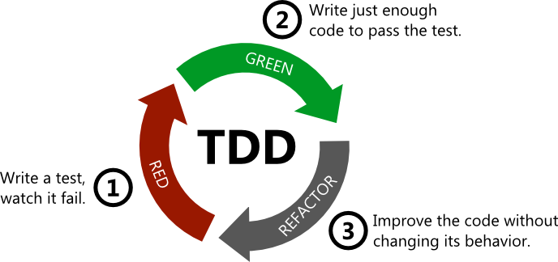

Test-driven development
Introducción
En palabras simples, el desarrollo guiado por pruebas pone las pruebas en el corazón de nuestro trabajo. En su forma más simple consiste en un proceso iterativo de 3 fases:

- Red: Escribir test que pruebe su funcionalidad y asegurar que falle.
- Green: Escribe el código mínimo necesario para pasar el test,
- Refactor: Refactoriza de ser necesario,
Ejemplo sencillo
A modo de ejemplo, vamos a testear la función paridad, que determina
si un número natural es par o no.
Lo primero que se debe hacer es crear el test, para ello se ocupará la librería pytest.
Nota: No es necesario conocer previamente la librería
pytestpara entender el ejemplo.
@pytest.mark.parametrize(
"number, expected",
[
(2, 'par'),
])
def test_paridad(number, expected):
assert paridad(number) == expected
El test nos dice que si el input es el número 2, la función paridad
devuelve el output 'par'. Cómo aún no hemos escrito la función, el
test fallará (fase red).
========= test session starts ============================================
platform linux -- Python 3.8.10, pytest-6.2.4, py-1.10.0, pluggy-0.13.1
rootdir: /home/fralfaro/PycharmProjects/ds_blog
plugins: anyio-3.3.0
collected 1 item
temp/test_funcion.py F [100%]
========= 1 failed in 0.14s ===============================================
Ahora, se escribe la función paridad (fase green):
def paridad(n:int)->str:
"""
Determina si un numero natural es par o no.
:param n: numero entero
:return: 'par' si es el numero es par; 'impar' en otro caso
"""
return 'par' if n%2==0 else 'impar'
Volvemos a correr el test:
========= test session starts ============================================
platform linux -- Python 3.8.10, pytest-6.2.4, py-1.10.0, pluggy-0.13.1
rootdir: /home/fralfaro/PycharmProjects/ds_blog
plugins: anyio-3.3.0
collected 1 item
temp/test_funcion.py . [100%]
========= 1 passed in 0.06s ===============================================
Hemos cometido un descuido a proposito, no hemos testeado el caso si el número fuese impar, por lo cual reescribimos el test (fase refactor)
@pytest.mark.parametrize(
"number, expected",
[
(2, 'par'),
(3, 'impar'),
])
def test_paridad(number, expected):
assert paridad(number) == expected
y corremos nuevamente los test:
========= test session starts ============================================
platform linux -- Python 3.8.10, pytest-6.2.4, py-1.10.0, pluggy-0.13.1
rootdir: /home/fralfaro/PycharmProjects/ds_blog
plugins: anyio-3.3.0
collected 2 items
temp/test_funcion.py .. [100%]
========= 2 passed in 0.06s ===============================================
Listo, nuestra función paridad ha sido testeado correctamente!.
¿Porqué debería usarlo?
Existen varias razones por las que uno debería usar TDD. Entre ellas podemos encontrar:
- Formular bien nuestros pensamientos mediante la escritura de un test significativo antes de ponernos a solucionar el problema nos ayuda a clarificar los límites del problema y cómo podemos resolverlo. Con el tiempo esto ayuda a obtener un diseño modular y reusable del código.
- Escribir tests ayuda la forma en que escribimos código, haciéndolo más legible a otros. Sin embargo, no es un acto de altruismo, la mayoría de las veces ese otro es tu futuro yo.
- Verifica que el código funciona de la manera que se espera, y lo hace de forma automática.
- Te permite realizar refactoring con la certeza de que no has roto nada.
- Los tests escritos sirven como documentación para otros desarrolladores.
- Es una práctica requerida en metodologías de desarrollo de software agile.
Evidencia empírica
El 2008, Nagappan, Maximilien, Bhat y Williams publicaron el paper llamado Realizing Quality Improvement Through Test Driven Development - Results and Experiences of Four Industrial Teams, en donde estudiaron 4 equipos de trabajo (3 de Microsoft y 1 de IBM), con proyectos que variaban entre las 6000 lineas de código hasta las 155k. Estas son parte de sus conclusiones:
Todos los equipos demostraron una baja considerable en la densidad de defectos: 40% para el equipo de IBM, y entre 60-90% para los equipos de Microsoft.
Como todo en la vida, nada es gratis:
Incremento del tiempo de desarrollo varía entre un 15% a 35%.
Sin embargo
Desde un punto de vista de eficacia este incremento en tiempo de desarrollo se compensa por los costos de mantención reducidos debido al incremento en calidad.
Además, es importante escribir tests junto con la implementación en pequeñas iteraciones. George y Williams encontraron que escribir tests después de que la aplicación está mas o menos lista hace que se testee menos porque los desarrolladores piensan en menos casos, y además la aplicación se vuelve menos testeable. Otra conclusión interesante del estudio de George y Williams es que un 79% de los desarrolladores experimentaron que el uso de TDD conlleva a un diseño más simple.
¿Puedo usar TDD siempre?
No, pero puedes usarlo casi siempre. El análisis exploratorio es un caso en que el uso de TDD no hace sentido. Una vez que tenemos definido el problema a solucionar y un mejor entendimiento del problema podemos aterrizar nuestras ideas a la implementación vía testing.
Librerías disponibles
Acá listamos algunas librerías de TDD en Python:
- unittest: Módulo dentro de la librería estándar de Python. Permite realizar tests unitarios, de integración y end to end.
- doctest: Permite realizar test de la documentación del código (ejemplos: Numpy o Pandas).
- pytest: Librería de testing ampliamente usada en proyectos nuevos de Python.
- nose: Librería que extiende unittest para hacerlo más simple.
- coverage: Herramienta para medir la cobertura de código de los proyectos.
- tox: Herramienta para facilitar el test de una librería en diferentes versiones e intérpretes de Python.
- hypothesis: Librería para escribir tests vía reglas que ayuda a encontrar casos borde.
- behave: Permite utilizar Behavior Driven Development, un proceso de desarrollo derivado del TDD.
Knowledge base / Lecturas recomendadas
- Realizing Quality Improvement Through Test Driven Development - Results and Experiences of Four Industrial Teams, es una buena lectura, sobretodo los consejos que dan en las conclusiones.
- Google Testing Blog: Poseen varios artículos sobre cómo abordar problemas tipo, buenas prácticas de diseño para generar código testeable, entre otros. En particular destaca la serie Testing on the Toilet.
- Cualquier artículo de Martin Fowler sobre testing, empezando por éste
- Design Patterns: Los patrones de diseño de software tienen en consideración que el código sea testeable.